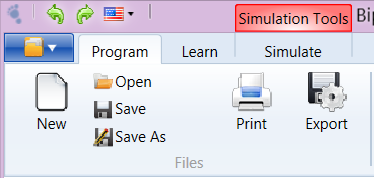
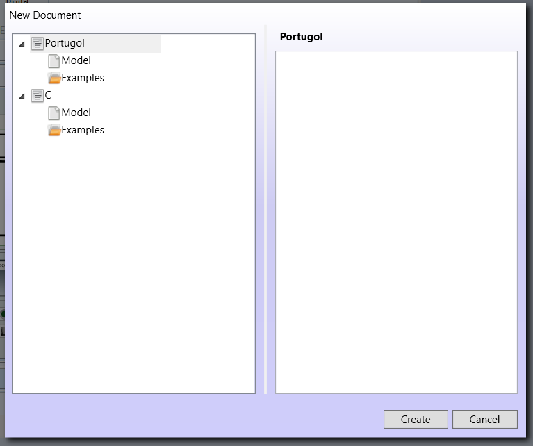
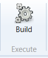
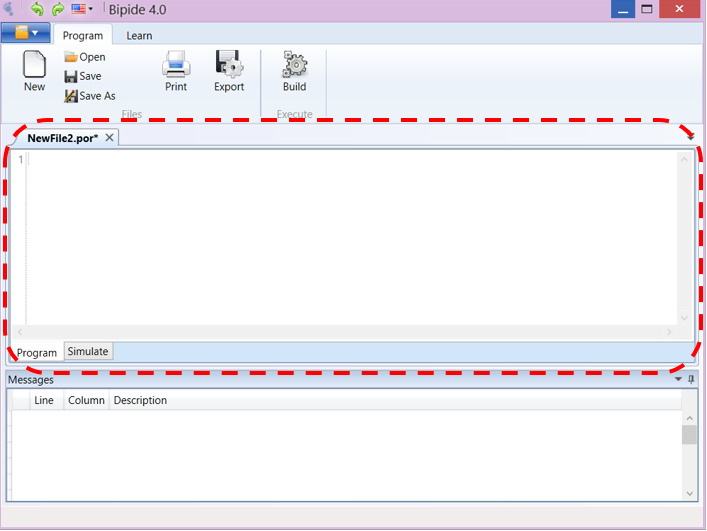
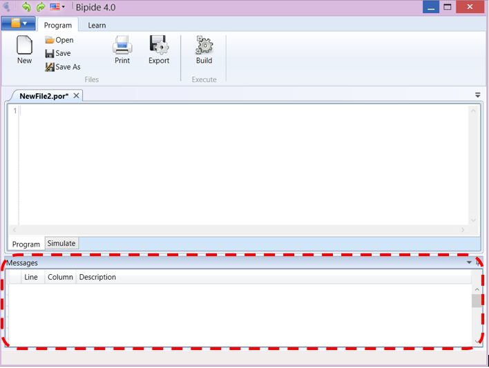

Possibilita a edição e compilação de programas escritos na linguagem C e Portugol.
Menu Arquivo

Apresenta as seguintes funcionalidades:
- Novo - Cria um novo programa (Portugol ou Assembly)
- Abrir - Abre um programa existente
- Salvar - Salvar o programa atual
- Salvar Como - Salva uma cópia do programa atual
- Imprimir - Imprime o programa atual
- Exportar - Permite exportar o programa nos formatos: Assembly, Binário, Hexadecimal, MIF e VHDL
Menu Abrir

Permite a seleção de exemplos e modelo em C e Portugol
Menu Editar
Apresenta as seguintes funcionalidades:
- Desfazer - Desfaz a última ação realizada.
- Refazer - Refaz a última ação desfeita.
Menu Executar

Possui funcionalidade de compilação e permissão para simulação
Editor

Possibilita a escrita e edição de programas em Portugol ou Assembly
Apresenta as seguintes funcionalidades:
- Possibilidade de abrir vários arquivos simultaneamente, separados por abas
- Identificação de palavras reservadas e símbolos da linguagem
- Identificação de abertura e fechamento de blocos de programas
- Identificação de abertura e fechamento de parênteses
- Possibilidade de expansão e contração de blocos de programa
Mensagens

Apresenta mensagens de erros ocorridos durante a compilação do programa e mensagens de alerta pertinentes ao programa.
Apresenta as seguintes funcionalidades:
- Indicação da linha e coluna do programa onde se encontra o erro